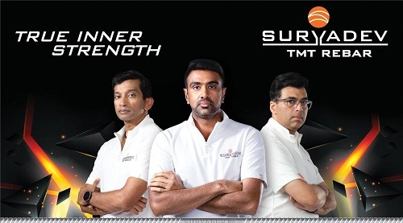

Suryadev Alloys & Power Pvt Ltd is a leading steel manufacturer in south india, producing hihg-quality intermediate and finished steel products.
TMT(Thermo=Mechanically Treated) Rebars are high-strenght reinforcement bars widely used in construction due to their superior strenght, flexibility, and resistance to corrosion. Suryadev TMT Rebars are available in a wide range of grades and size from 08mm to 40mm in diameter, and can be customized to specific lengths to meets the unique requirement of any projects.